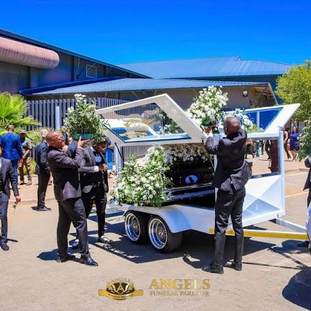

Dignity
Honouring each life with care and respect.
 Koena DignityFuneral Services
Koena DignityFuneral Services
ABOUT KOENA DIGNITY
Our proposed funeral service is guided by compassion, respect, community and heritage.
OUR STORY
Koena Dignity Funeral Services is a proposed funeral parlour based in Bloemfontein, Free State. The business is founded on the belief that every person deserves to be remembered and honoured with dignity, regardless of background or circumstance.
Arranging a funeral can be emotionally and financially challenging. Our aim is to provide clear information, compassionate guidance and flexible options to help families make informed decisions.

OUR VALUES
Honouring each life with care and respect.
Listening to families and recognising their needs.
Respecting the traditions and connections that bring people together.
OUR NAME & HERITAGE
The name Koena is inspired by the Bakoena (Koena/Crocodile) clan and its place in Basotho heritage. The website reflects identity, family and belonging while welcoming people from different cultural and religious backgrounds.
